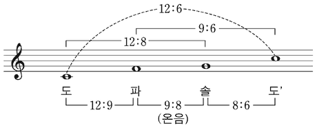

피타고라스 음률
지문을 먼저 읽고, 이해가 막히는 문단에서 ‘그림으로 보기’를 누르세요. 그림은 문단을 따라 바뀝니다.
1문단(가) 음악사학자들은 서양 음악의 기원을 고대 그리스 음악에서 찾는다. 그러나 고대 그리스인들이 향유하던 음악이 실제로 어떠했는지는 분명치 않다. 그 이유는 음악적 실체를 밝힐 문헌 자료가 충분치 않고, 현존하는 자료의 대부분이 음악 그 자체보다는 이론이 어떠했는지의 정보에 편중되어 있기 때문이다. 한 가지 분명한 사실은 그들에게 음악은 기예 영역이라기보다 학문적 영역이었다는 점인데, 이는 고대 그리스 음악 이론에 ⓐ내재한 수학적인 사고에서 쉽게 찾아볼 수 있다.
2문단(나) 음악에서 수학적인 관계를 처음으로 밝혀낸 학자는 바로 고대 그리스의 수학자 피타고라스이다. ㉠“만물은 수(數)로 이루어져 있다.”라고 한 그의 주장을 뒷받침하는 대표적인 분야가 곧 음악이었다. 피타고라스는 ㉡하프를 직접 연주하면서 소리를 분석하여, ㉢하프에서 나오는 소리가 가장 듣기 좋게 조화를 이루는 경우에 하프 현의 길이가 ㉣간단한 정수비를 나타낸다는 사실을 밝혀냈다. 도와 한 옥타브 위의 도’는 2：1, 도와 솔의 5도는 3：2, 솔과 그 위 도’의 4도는 4：3의 비를 이룬다는 것 등이 그것인데, ㉤5도에 기초한 피타고라스 음률이 곧 오늘날 우리가 음정이라 하는 것의 기원이며, 음향학의 출발이기도 하다.
3문단(다) 음악을 수학의 눈으로 이해하려는 시도만 있었던 것은 아니었다. 최초의 음악 이론가로 알려져 있는 아리스토제누스는 피타고라스의 음악관을 비판하며 실제적 측면에서 음악을 바라본다. 그는 ‘감각적 지각’이 수적 비율보다 음악을 판단하는 데에 더 근본적이라 주장하며, 이를 미적 체험의 바탕으로 삼았다. 예를 들어 5도를 아름답다고 들었을 때, 그것이 왜 아름답게 들리는지를 수리적 추리를 통해 이해하려고 했던 피타고라스와는 달리, 아리스토제누스는 귀로 지각된 소리를 근거로 음악의 아름다움을 판단한다.
4문단(라) 아리스토제누스는 경험적이고 현상론적인 입장에서 오늘날 서양 음악의 기초가 되는 리듬과 멜로디에 관한 이론을 제시하고 당시 통용되던 음악 현상들을 실제적으로 정리하였다. 논리보다는 경험을 중시하는 그의 학문 성향은 음악주의자라고 불리는 후대의 많은 이론가들에게 받아들여졌으며, 음악을 수학적으로 풀이하려는 피타고라스주의자들에게는 비판받았다.
5문단(마) 고대 그리스 음악 이론의 두 전통은 논리이냐 경험이냐의 대조적인 사유의 두 축을 이루며, 서양 음악 이론의 맥을 형성하였다. 이 두 전통에 ⓑ배어 있는 대립적 성향은 비단 이론뿐 아니라, 창작․연주․감상에 이르는 다양한 음악 활동을 평가하는 잣대로 자리매김하여 오늘에 이르고 있다.
위 글을 바탕으로 <보기>를 해석한 내용으로 적절하지 않은 것은? [3점]
첼로를 전공하는 윤지는 음향학 시간에 배운 음정의 원리를 C현에 적용하고 있다. 윤지는 도가 소리 나는 이 C현을 12등분하여, 확장된 비례식 12:9:8:6을 가지고 옥타브 안에 존재하는 5도, 4도, 온음 사이의 복합적인 관계를 다음과 같이 확인하였다.

그림: 오선 위 도, 파, 솔, 도’ 네 음. 위쪽 괄호 12:6(도–도’), 12:8(도–솔), 9:6(파–도’), 아래쪽 괄호 12:9(도–파), 9:8(파–솔, 온음), 8:6(솔–도’)" style="display:block;width:100%;max-width:460px;margin:6px auto 0">